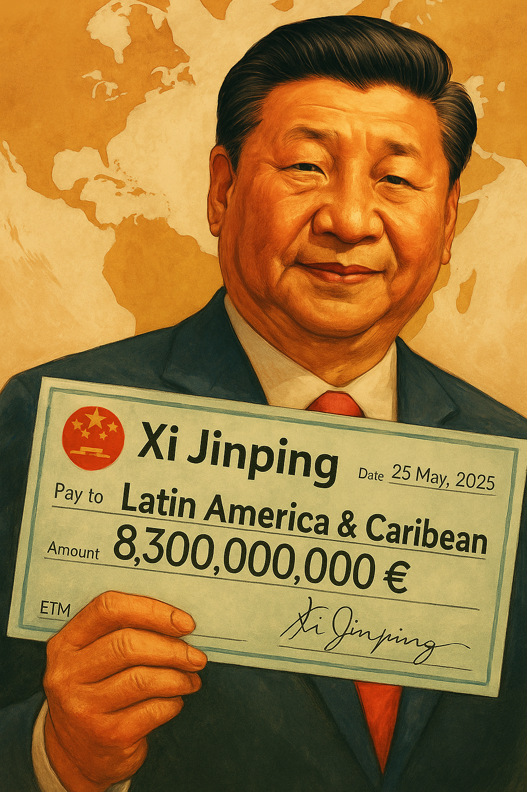

Publicado em 2025-05-15 10:56:00
No xadrez geopolítico do século XXI, já não é necessário conquistar para dominar. Basta emprestar. E nenhum jogador entende isso melhor do que Xi Jinping, o presidente da China que, sem disparar um único tiro, está a redesenhar a ordem mundial com crédito, influência e contratos de longo prazo.
Esta semana, a China prometeu 8,3 mil milhões de euros em empréstimos a países da América Latina e Caraíbas, reforçando o seu papel como parceiro preferencial das economias em desenvolvimento. Mas o gesto é muito mais do que financeiro — é político, estratégico, e profundamente simbólico.
É o modelo chinês de diplomacia: dinheiro agora, influência depois.
Ao declarar que os países devem “rejeitar interferência externa” e “seguir um caminho de desenvolvimento alinhado com as suas condições nacionais”, Xi fala a língua que muitos líderes populistas e autocráticos adoram ouvir.
É a nova ideologia do século XXI:
"Façam negócios connosco. Não vamos perguntar como tratam os vossos jornalistas, juízes ou opositores."
Enquanto os EUA, sob Trump, fazem negócios familiares e impõem tarifas, e a Europa se perde em cimeiras e normas, a China:
É o novo colonialismo — mas desta vez, com sorriso e yuan.
Portugal assiste a tudo como figurante silencioso:
E a Europa, fragmentada e hesitante, continua a agir como se a ordem liberal ocidental ainda fosse a única em jogo. Mas o tabuleiro já mudou — e o novo jogo fala mandarim.
Se o Ocidente não reagir com:
ficará reduzido a espectador de um mundo que já não molda — apenas observa.
Porque enquanto uns ainda discursam, Xi Jinping compra o palco inteiro.